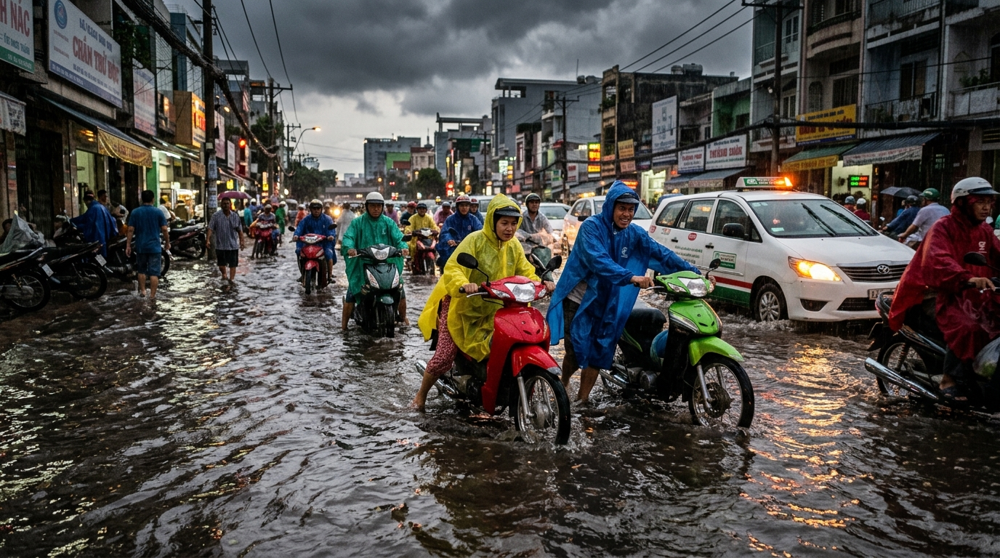

Nổi bậtĐường ngập Sài Gòn: 7 việc nên làm – và 3 việc tuyệt đối tránh
Đỉnh triều cường tháng 10 khiến nhiều tuyến đường ngập sâu. Đi số thấp, giữ ga đều, không tắt máy giữa vùng nước – và nếu xe đã chết máy, đừng cố đề lại kẻo nước vào buồng đốt gây thủy kích.
Xem dịch vụ cứu hộ xe ngập nước